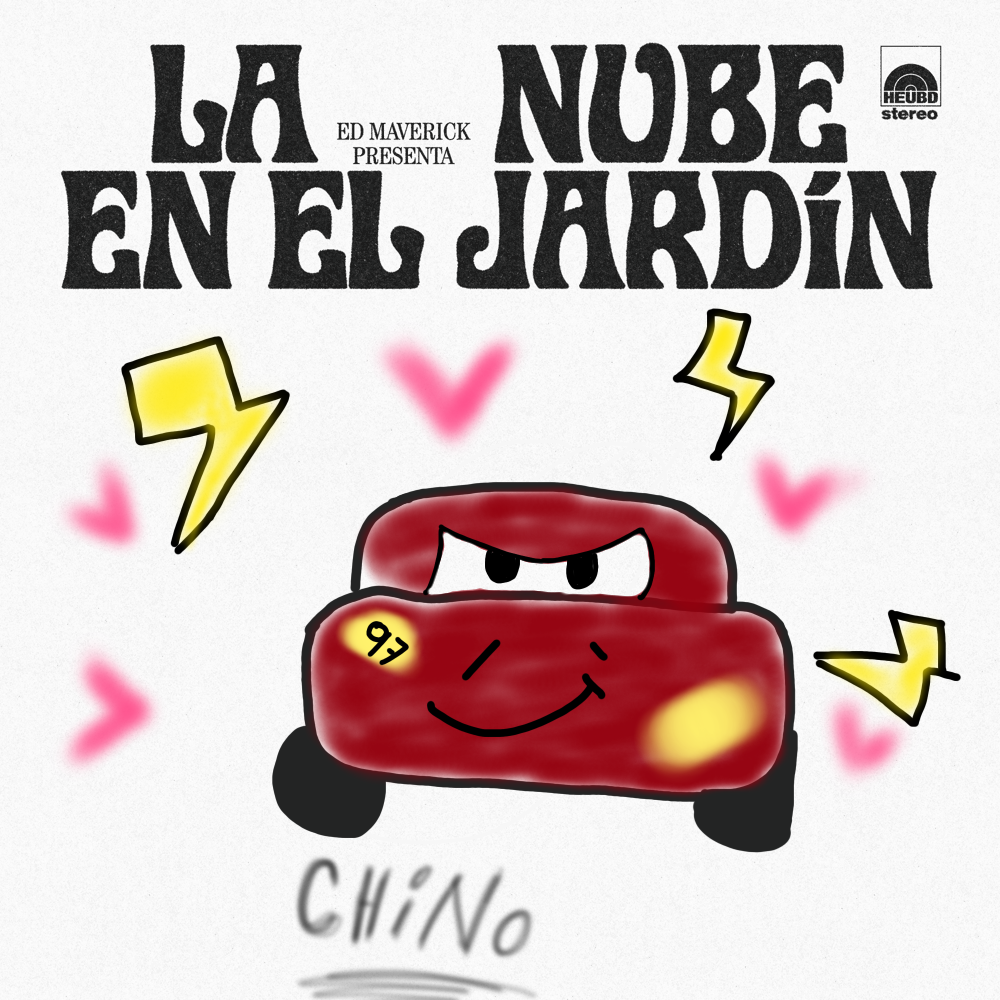
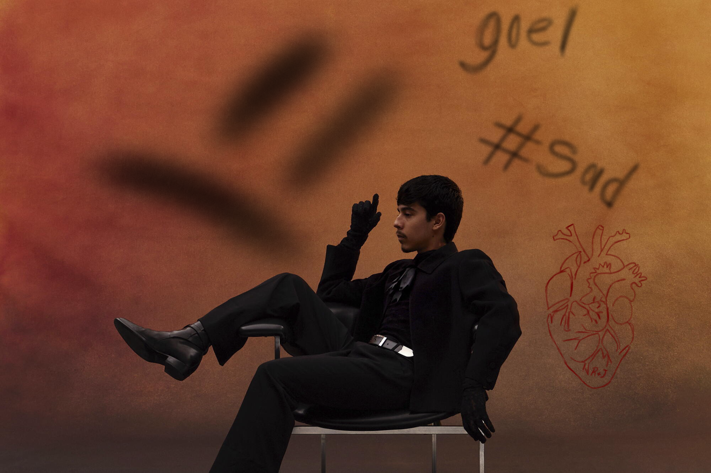
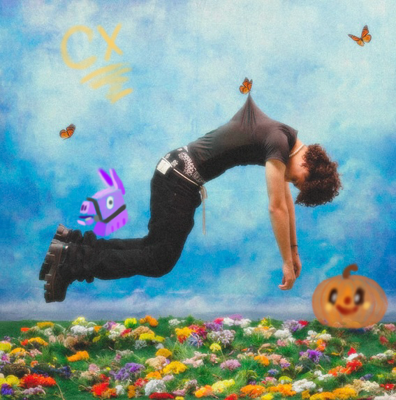

Primero que nada felicitarte y decirte que no ocupo respuesta de nada, todo es lo que he pensado, como m he sentido, quiero que te tomes el tiempo en cada cosa y no vayas rspido solo por querer darme una respuesta, 04 d sept al 02 d oct,okey, de vdd desde que te conozco no te diré que desde el principio o el primer día, pero conforme hemos pasado estos meses han sido de lo mejor, así hayan problemas o lo que sea, siempre estaré eternamente agradecida con Dios por ponerte en mi camino, te lo juro que te has convertido en alguien tan importante para mí, agradezco que aunq hayan desacuerdos siempre estés para mí, amo todo lo que haces por mí, así no haya necesidad de hacerlo tú lo haces, amor no sabes lo mucho que me encanta hacerte enojar tlj. Igual decirte que si me escuchas distraída o algo es porque hago esto mientras estamos en llamada y no sabes lo mucho que me río JAJAJAJ. AMOR, GUSTO ME DIJISTE “sepa de qué te rías pero está bien, sigue en el celular” JAJAJAJAJJAJ. ERES TAN PREDECIBLE, QUÉ ONDA Bueno ya, ya, mucha risa. Te amo mucho, Goel. Oka, también te copiaré todo pero mi versión, ok. También decirte que no sé hacer esto, solo que se me hizo más fácil todo en uno, así que no estará súper genial jaja lol. Me esforcé mucho, valóralo Goel. Tmb aclarar todo todo lo hice yo con mucho cariño, no es q me tarde en contestar es q cuando estoy haciendo todo, me concentro demasiado y se m va todo, t amo eternamente

Me recuerda demasiado a ti porque es tu canción fav y pues ya.

Esta canción supongo porque estás dolido y así, como siempre escuchando canciones tristes, dolidas.

Hola, aquí no sé qué decirte, solo te diré que me caga que te pongas otaku y me ignores. Te amo.
Bueno, estas son canciones que te gustan. Esto te lo pregunté ya 8 días antes de tu cumple porque ya no sé qué ponerte. Últimamente hemos estado más distantes, pero no quiere decir que yo en algún momento te he dejado de amar o así. Eres un chico demasiado especial, me encanta que llegues a ser muy transparente conmigo. Gracias a eso siempre te tengo confianza, así sea que te enojes y te pongas otaku. Te amo mucho. Igual aqui t dejo una playlist que no m enojare si escuchas esa mientras estas conmigo no hay dolidas ni d infieles, no creo q te guste chin becho
Aquí, empezando esto, es un poco de todo lo que haces por mí y ahora me gustaría yo hacerlo por ti. Aclaro que muchas cosas no son recientes o apenas las actualicé, todo te lo hago en cómo me he sentido, me siento y todo mi amor. Eres el mejor, te amo eternamente, te amo y no me cansaré de decirlo. Eres todo lo que un día quise, te amo mucho, mi niño.
Primero pícale aquí
Hola, m gustaria felicitarte, d vdd eres el chico mas especial, lindo, tierno, docil, simplemente perfecto, eres el mejor Joel, eres lo mas bello del mundo, aunque no lo veas asi, realmente eres increible.
HBDOkey, ahora queria mostrarte mi top SI(lo que me gusta que hagas) y No(Lo que 0 m gusta que hagas)creo q se m olvido poner q me lleves la contraria te amo muchisimo y puse colores como si fuera revelacion d genero KSKSKAKAKAKAJAJJA, te amo mucho mi amor
Hola, aqui m gustaria agradecerte por cada cosa q haces, no se si lo hagas esperando respuesta o algo, pero siempre lo haces y es algo lindo
en realidad no swbria explicarte d lo que se trata esta simplemente te amo
Hola amor, últimamente hemos estado muy distantes los dos, y es algo que d vdd no me gusta para nada, porque siento muy distinto todo :( te amo con todo mi corazon